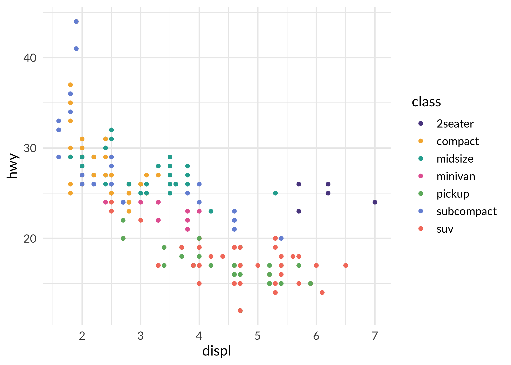
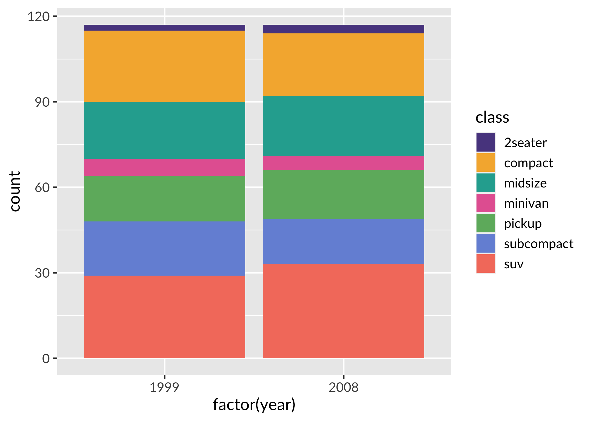
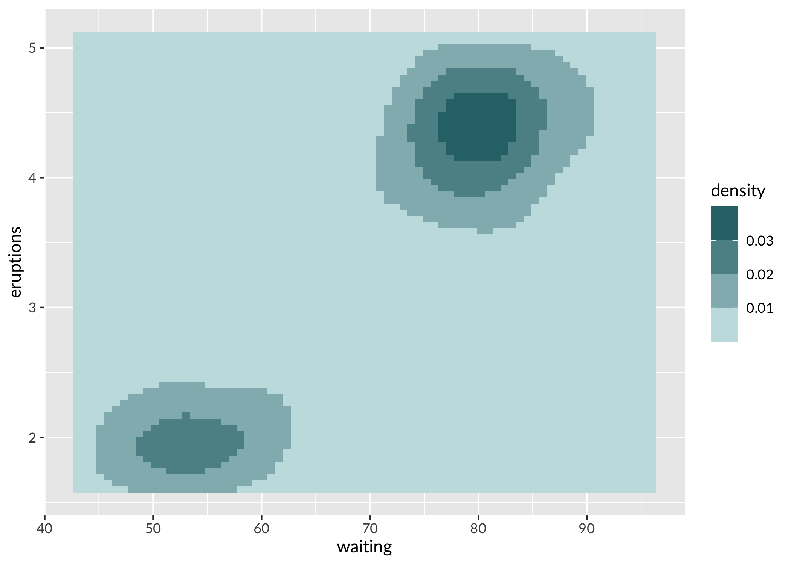
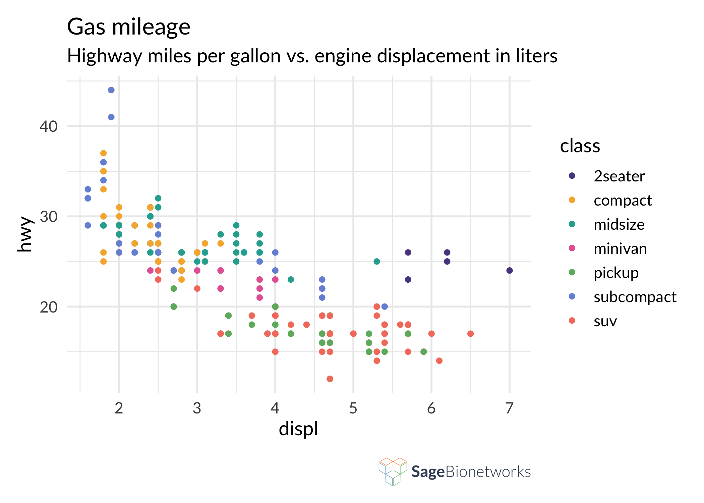

The sagethemes package provides plot color palettes and themes that use the Sage Bionetworks branded colors.
Installation
remotes::install_github("Sage-Bionetworks/sagethemes", ref = "main")Colors
Colors were developed by the Sage design team and are available in the list sage_colors.
library("sagethemes")
head(sage_colors, n = 3)
#> $royal
#> 200 300 400 500 600 700 800
#> "#D5CFE3" "#B2A5D1" "#907FBA" "#5A478F" "#47337D" "#332069" "#251454"
#>
#> $powder
#> 200 300 400 500 600 700 800
#> "#E1F4F5" "#C5EDF0" "#A6DDE0" "#7EC8CC" "#5BB0B5" "#2F8E94" "#0C656B"
#>
#> $coral
#> 200 300 400 500 600 700 800
#> "#F7E2DF" "#FFC5BD" "#FCA79A" "#F47E6C" "#DA614F" "#BD422F" "#8F1D0B"Usage
sagethemes provides continuous, discrete, and binned scales. It also provides a default theme, theme_sage(), which is currently just theme_minimal() but with Lato as the font family and a larger default font size. Lato must be installed for this theme to work. See the Fonts section below, and ?import_lato for more information.
library("ggplot2")
library("extrafont")
#> Registering fonts with R
library("sagethemes")
# discrete
ggplot(mpg, aes(displ, hwy, colour = class)) +
geom_point() +
scale_color_sage_d() +
theme_sage()
ggplot(mpg, aes(x = factor(year), fill = class)) +
geom_bar() +
scale_fill_sage_d() +
theme_sage()
# continuous
ggplot(faithfuld, aes(waiting, eruptions, fill = density)) +
geom_tile() +
scale_fill_sage_c(option = "powder") +
theme_sage()
# binned -- note this requires ggplot2 version 3.3.1.9000 or greater
ggplot(faithfuld, aes(waiting, eruptions, fill = density)) +
geom_tile() +
scale_fill_sage_b(option = "powder") +
theme_sage()
Fonts
Sage Bionetworks uses Lato. If you’ve installed Lato on your system, you should be able to use it in plots.
However, to output to PDF, PostScript, or bitmap files on Windows, you need to register the font. sagethemes includes a copy of Lato, and you can load it with import_lato(). If saving to PDF you’ll also need to embed Lato in the PDF file.
import_lato()
p <- ggplot(mpg, aes(displ, hwy, colour = class)) +
geom_point() +
scale_color_sage_d() +
theme_sage()
# Save PDF plot and embed Lato font
ggsave("plot.pdf", plot = p)
embed_fonts("plot.pdf", outfile = "plot_embed.pdf")Add logos
sagethemes allows you to add a logo to the bottom right of your plot with the logo_image() and logo_layout() functions. By default it will use the Sage Bionetworks logo, but you can also provide your own image, for example a project-specific logo. This should be the last function call in your ggplot2 chain; you won’t be able to add additional ggplot2 elements to the initial plot after adding the logo.
ggplot(mpg, aes(displ, hwy, colour = class)) +
geom_point() +
scale_color_sage_d() +
theme_sage() +
labs(
title = "Gas mileage",
subtitle = "Highway miles per gallon vs. engine displacement in liters"
) +
logo_image() +
logo_layout()
Code of Conduct
Please note that the dccvalidator project is released with a Contributor Code of Conduct. By contributing to this project, you agree to abide by its terms.